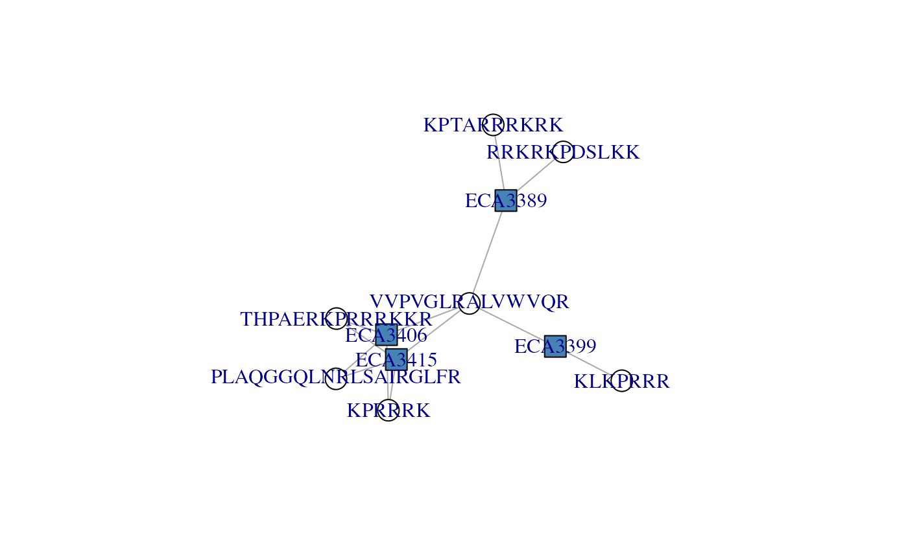
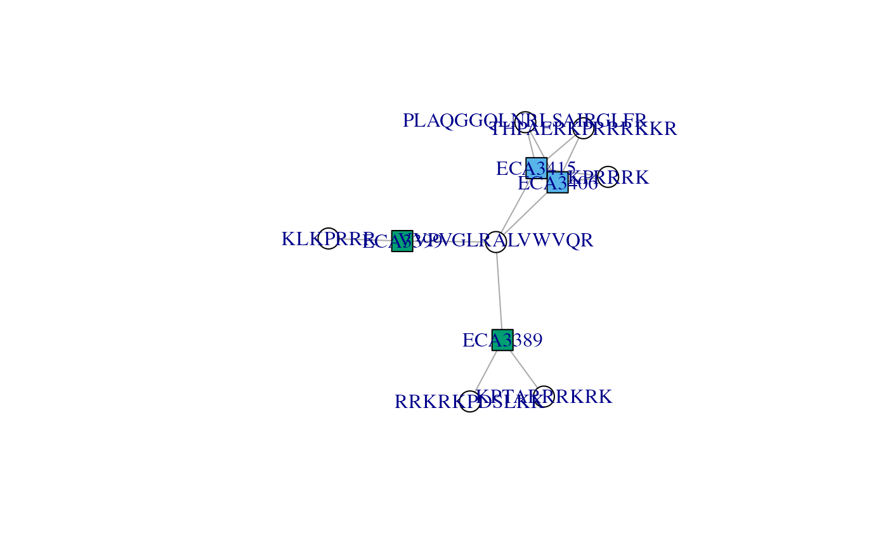
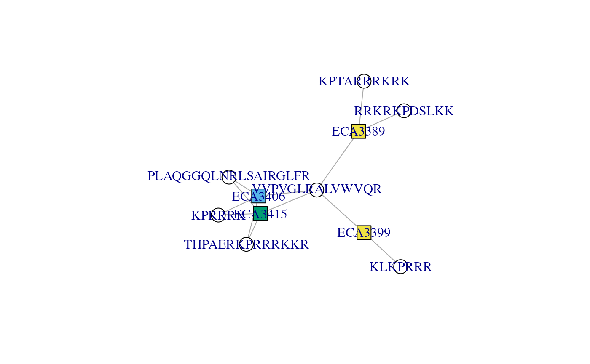
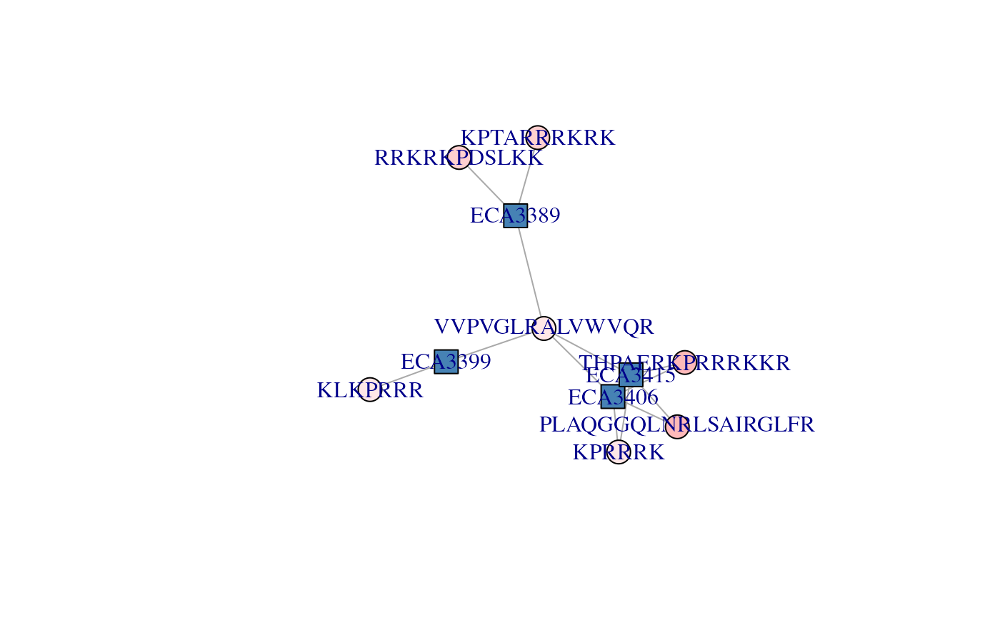
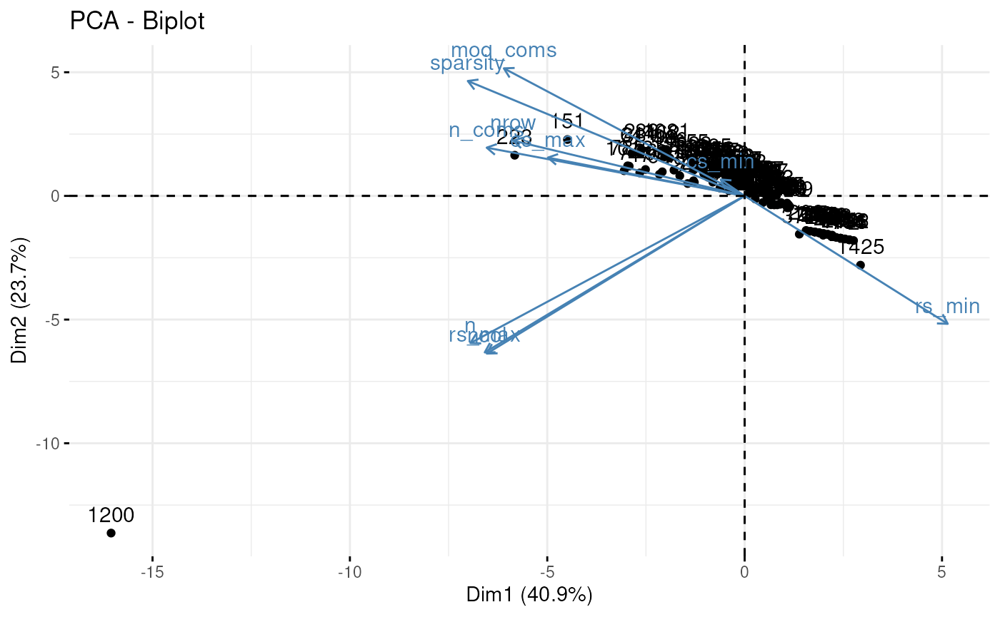

vignettes/AdjacencyMatrix.Rmd
AdjacencyMatrix.RmdPackage: PSMatch
Authors: Laurent Gatto [aut, cre] (https://orcid.org/0000-0002-1520-2268), Johannes Rainer
[aut] (https://orcid.org/0000-0002-6977-7147), Sebastian Gibb
[aut] (https://orcid.org/0000-0001-7406-4443), Samuel Wieczorek
[ctb], Thomas Burger [ctb]
Last modified:
2022-04-25 15:31:10
Compiled: Mon Apr 25 15:39:49
2022
This vignette is one among several illustrating how to use the
PSMatch package, focusing on the modelling peptide-protein
relations using adjacency matrices and connected componencts. For a
general overview of the package, see the PSMatch package
manual page (?PSMatch) and references therein.
Let’s start by loading and filter PSM data as illustrated in the Working with PSM data vignette.
library("PSMatch")
id <- msdata::ident(full.names = TRUE, pattern = "TMT") |>
PSM() |>
filterPsmDecoy() |>
filterPsmRank()## Loading required namespace: mzR## Removed 2896 decoy hits.## Removed 155 PSMs with rank > 1.
id## PSM with 2751 rows and 35 columns.
## names(35): sequence spectrumID ... subReplacementResidue subLocationWhen identification data is stored as a table, the relation between peptides is typically encode in two columns, once containing the peptide sequences and the second the protein identifiers these peptides stem from. Below are the 10 first observations of our identification data table.
data.frame(id[1:10, c("sequence", "DatabaseAccess")])## sequence DatabaseAccess
## 1 RQCRTDFLNYLR ECA2006
## 2 ESVALADQVTCVDWRNRKATKK ECA1676
## 3 QRMARTSDKQQSIRFLERLCGR ECA3009
## 4 DGGPAIYGHERVGRNAKKFKCLKFR ECA1420
## 5 QRMARTSDKQQSIRFLERLCGR ECA3009
## 6 CIDRARHVEVQIFGDGKGRVVALGERDCSLQRR ECA2142
## 7 CIDRARHVEVQIFGDGKGRVVALGERDCSLQRR ECA2142
## 8 VGRCRPIINYLASPGGTSER ECA0331
## 9 QRLDEHCVGVGQNALLLGR ECA3680
## 10 VDYQGKKVVIIGLGLTGLSCVDFFLARGVVPR ECA3817This information can however also be encoded as an adjacency matrix with peptides along the rows and proteins along the columns, and a 1 (or more generally a value > 0) indicating that a peptides belongs to the corresponding proteins. Such a matrix is created below for our identification data.
adj <- makeAdjacencyMatrix(id)
dim(adj)## [1] 2357 1504
adj[1:5, 1:5]## 5 x 5 sparse Matrix of class "dgCMatrix"
## ECA2006 ECA1676 ECA3009 ECA1420 ECA2142
## RQCRTDFLNYLR 1 . . . .
## ESVALADQVTCVDWRNRKATKK . 1 . . .
## QRMARTSDKQQSIRFLERLCGR . . 2 . .
## DGGPAIYGHERVGRNAKKFKCLKFR . . . 1 .
## CIDRARHVEVQIFGDGKGRVVALGERDCSLQRR . . . . 2This matrix models the relation between the 2357 peptides and the 1504 is our identification data. These numbers can be verified by checking the number of unique peptides sequences and database accession numbers.
## [1] 2357## [1] 1504Some values are > 1 because some peptide sequences are observed
more than oncce, for example carrying different modification or the same
one at different sites. The adjacency matrix can be made binary by
setting madeAdjacencyMatrix(id, binary = TRUE).
This large matrix is too large to be explored manually and is anyway not interesting on its own. Subsets of this matrix that define proteins defines by a set of peptides (whether shared or unique) is relevant. These are represented by subsets of this large matrix named connected component. We can easily compute all these connected components to produce the multiple smaller and relevant adjacency matrices.
cc <- ConnectedComponents(adj)
length(cc)## [1] 1476
cc## An instance of class ConnectedComponents
## Number of proteins: 1504
## Number of components: 1476
## Number of components [peptide x peptides]:
## 954[1 x 1] 7[1 x n] 501[n x 1] 14[n x n]Among the 2357 and the 1504 proteins, we have 1476 connected components.
954 thereof, such as the one shown below, correspond to single proteins identified by a single peptide:
connectedComponents(cc, 1)## 1 x 1 sparse Matrix of class "dgCMatrix"
## ECA0003
## KTLGAYDFSFGEGIYTHMKALR 17 thereof represent protein groups identified by a single shared peptide:
connectedComponents(cc, 527)## 1 x 2 sparse Matrix of class "dgCMatrix"
## ECA1637 ECA2914
## KEIILNKNEK 1 1501 represent single proteins identified by multiple unique peptides:
connectedComponents(cc, 38)## 5 x 1 sparse Matrix of class "dgCMatrix"
## ECA0130
## GKIECNLRFELDPSAQSALILNEKLAK 1
## ERLQSKLEDAQVQLENNRLEQELVLMAQR 1
## GNWGSAAWELRSVNQR 1
## ILKKEEAVGRR 1
## ERIRARLTR 1Finally, arguable those that warrant additional exploration are those that are composed of multiple peptides and multiple proteins. There are 14 thereof in this identification; here’s an example:
connectedComponents(cc, 920)## 4 x 2 sparse Matrix of class "dgCMatrix"
## ECA2869 ECA4278
## QKTRCATRAFKANKGRAR 1 1
## IDFLRDPKGYLR 1 .
## RFKQKTR . 1
## LIRKQVVQPGYR 1 1Let’s identify the connected components that have at least 3 peptides (i.e. rows in the adjacency matrix) and 3 proteins (i.e. columns in the adjacency matrix).
(i <- which(nrows(cc) > 2 & ncols(cc) > 2))## [1] 1079 1082
dims(cc)[i, ]## nrow ncol
## [1,] 3 4
## [2,] 7 4We will use the second adjacency matrix, with index 1082 to learn
about the plotAdjacencyMatrix() function and explore how to
inform our peptides filtering beyond the filterPsm*()
functions.
cx <- connectedComponents(cc, 1082)
cx## 7 x 4 sparse Matrix of class "dgCMatrix"
## ECA3406 ECA3415 ECA3389 ECA3399
## THPAERKPRRRKKR 1 1 . .
## KPTARRRKRK . . 2 .
## PLAQGGQLNRLSAIRGLFR 1 1 . .
## RRKRKPDSLKK . . 1 .
## KPRRRK 1 1 . .
## VVPVGLRALVWVQR 1 1 1 1
## KLKPRRR . . . 1We can now visualise the the cx adjacency matrix with
the plotAdjacencyMatrix() function. The nodes of the graph
represent proteins and petides - by default, proteins are shown as blue
squares and peptides as white circles. Edge connect peptides/circles to
proteins/squares, indicating that a peptide belongs to a protein.

We can immediately observe that peptide VVPVGLRALVWVQR
is associated to all four proteins; it holds that protein group
together, defines that connected component formed by these four
proteins. If we were to drop that peptides, we would obtain two single
proteins, ECA3399 (defined by KLKPRRR),
ECA3398 (defined by RRKRKPDSLKK and
KPTARRRKRK) and a protein group formed of
ECA3415 and ECA3406 (defined by three shared
peptides).
To help with the interpretation of the graph and the potential
benefits of additional manual peptide filtering, it is possible to
customise the node colours. Protein and peptide node colours can be
controlled with the protColors and pepColors
arguments respectively. Let’s start with the former.
protColors can either be a numeric or a character. The
default value is 0, which produces the figure above. Any value > 0
will lead to more proteins being highlighted using different colours.
Internally, string distances between protein names are computed and
define if proteins should be coded with the same colours (if they are
separated by small distances, i.e. they have similar names) or different
colours (large distance, dissimilar names).
By setting the argument to 1, we see that proteins starting with
ECA33 and those starting with ECA34 are
represented with different colours.
plotAdjacencyMatrix(cx, 1)
We can further distinguish ECA3406, and
ECA314 and ECA33*9 by setting
protColors to 2.
plotAdjacencyMatrix(cx, 2)
protColors can also be a character of colours named by
protein names. We will illustrate this use below, as it functions the
same way as pepColors.
pepColors can either be NULL to represent
peptides as white nodes (as we have seen in all examples above).
Alternatively, it can be set to a character of colours names after the
peptides sequences. Let’s use the search engine score (here
MS.GF.RawScore) to annotate the peptide nodes.
We can extract this metric from the PSM object we started with and create a colour palette representing the range of scores.
The named vector of scores:
## RQCRTDFLNYLR ESVALADQVTCVDWRNRKATKK
## 10 12
## QRMARTSDKQQSIRFLERLCGR DGGPAIYGHERVGRNAKKFKCLKFR
## -5 7
## QRMARTSDKQQSIRFLERLCGR CIDRARHVEVQIFGDGKGRVVALGERDCSLQRR
## 21 -31The matching named vector of colours:
cls <- as.character(cut(score, 12,
labels = colorRampPalette(c("white", "red"))(12)))
names(cls) <- id$sequence
head(cls)## RQCRTDFLNYLR ESVALADQVTCVDWRNRKATKK
## "#FFA2A2" "#FFA2A2"
## QRMARTSDKQQSIRFLERLCGR DGGPAIYGHERVGRNAKKFKCLKFR
## "#FFB9B9" "#FFA2A2"
## QRMARTSDKQQSIRFLERLCGR CIDRARHVEVQIFGDGKGRVVALGERDCSLQRR
## "#FFA2A2" "#FFD0D0"Below, we see that all these peptides have relatively low scores
(light red), and that two of the three of the ECA34*
proteins have the highest scores.
plotAdjacencyMatrix(cx, pepColors = cls)
To conclude this vignette, we show how this same data modelling and
exploration cam be initiated from a quantitative dataset. We will use
part of the CPTAC data that is available in the msdata
package.
Once we have the path to the tsv data, we identify the columns that
contain quantitation values (i.e. those starting with
Intensity.) and them create a
SummarizedExperiment using the readSummarizedExperiment()
function from the QFeatures
package.
## [1] "cptac_a_b_peptides.txt"
(i <- grep("Intensity\\.", names(read.delim(f))))## [1] 56 57 58 59 60 61
library(QFeatures)
se <- readSummarizedExperiment(f, ecol = i, sep = "\t")Below, we create a vector of protein groups (not leading razor protein names) and name it using the peptide sequences.
## AAAAGAGGAGDSGDAVTK
## "sp|P38915|SPT8_YEAST"
## AAAALAGGK
## "sp|Q3E792|RS25A_YEAST;sp|P0C0T4|RS25B_YEAST"
## AAAALAGGKK
## "sp|Q3E792|RS25A_YEAST;sp|P0C0T4|RS25B_YEAST"
## AAADALSDLEIK
## "sp|P09938|RIR2_YEAST"
## AAADALSDLEIKDSK
## "sp|P09938|RIR2_YEAST"
## AAAEEFQR
## "sp|P53075|SHE10_YEAST"Below, the makeAdjacencyMatrix() will split the protein
groups into individual proteins using a ; (used by default,
so not required here) to construct the adjacency matrix, which itself
can be used to compute the connected components.
adj <- makeAdjacencyMatrix(prots, split = ";")
dim(adj)## [1] 11466 1718
adj[1:3, 1:3]## 3 x 3 sparse Matrix of class "dgCMatrix"
## sp|P38915|SPT8_YEAST sp|Q3E792|RS25A_YEAST
## AAAAGAGGAGDSGDAVTK 1 .
## AAAALAGGK . 1
## AAAALAGGKK . 1
## sp|P0C0T4|RS25B_YEAST
## AAAAGAGGAGDSGDAVTK .
## AAAALAGGK 1
## AAAALAGGKK 1
cc <- ConnectedComponents(adj)
cc## An instance of class ConnectedComponents
## Number of proteins: 1718
## Number of components: 1452
## Number of components [peptide x peptides]:
## 139[1 x 1] 0[1 x n] 1163[n x 1] 150[n x n]The prioritiseConnectedComponents() function can be used
to help prioritise the most interesting connected components to
investigate. The function computes a set of metrics describing the
components composed of as least several peptides and proteins (150 in
the example above) and ranks them from the most to the least
interesting.
head(cctab <- prioritiseConnectedComponents(cc))## nrow ncol n_coms mod_coms n rs_min rs_max cs_min cs_max sparsity
## 1081 21 3 3 0.5793951 23 1 2 7 8 0.6349206
## 223 109 6 3 0.5522382 189 1 6 15 43 0.7110092
## 462 25 3 3 0.5301783 27 1 2 3 14 0.6400000
## 785 16 6 4 0.4862826 27 1 6 1 7 0.7187500
## 7 9 9 4 0.4819945 19 1 6 1 7 0.7654321
## 381 39 3 3 0.4770794 46 1 3 6 25 0.6068376The prioritisation table can then be further summarised using a principal component to identify outliers (for example component 1200 below) or groups of similar components to explore.
library(factoextra)
fviz_pca(prcomp(cctab, scale = TRUE, center = TRUE))
## R Under development (unstable) (2022-03-14 r81896)
## Platform: x86_64-pc-linux-gnu (64-bit)
## Running under: Ubuntu 20.04.4 LTS
##
## Matrix products: default
## BLAS/LAPACK: /usr/lib/x86_64-linux-gnu/openblas-pthread/libopenblasp-r0.3.8.so
##
## locale:
## [1] LC_CTYPE=en_US.UTF-8 LC_NUMERIC=C
## [3] LC_TIME=en_US.UTF-8 LC_COLLATE=en_US.UTF-8
## [5] LC_MONETARY=en_US.UTF-8 LC_MESSAGES=en_US.UTF-8
## [7] LC_PAPER=en_US.UTF-8 LC_NAME=C
## [9] LC_ADDRESS=C LC_TELEPHONE=C
## [11] LC_MEASUREMENT=en_US.UTF-8 LC_IDENTIFICATION=C
##
## attached base packages:
## [1] stats4 stats graphics grDevices utils datasets methods
## [8] base
##
## other attached packages:
## [1] factoextra_1.0.7 ggplot2_3.3.5
## [3] QFeatures_1.5.2 MultiAssayExperiment_1.21.7
## [5] SummarizedExperiment_1.25.3 Biobase_2.55.2
## [7] GenomicRanges_1.47.6 GenomeInfoDb_1.31.10
## [9] IRanges_2.29.1 MatrixGenerics_1.7.0
## [11] matrixStats_0.62.0 PSMatch_0.99.5
## [13] S4Vectors_0.33.17 BiocGenerics_0.41.2
## [15] BiocStyle_2.23.1
##
## loaded via a namespace (and not attached):
## [1] ProtGenerics_1.27.2 bitops_1.0-7 fs_1.5.2
## [4] rprojroot_2.0.3 backports_1.4.1 tools_4.2.0
## [7] bslib_0.3.1 utf8_1.2.2 R6_2.5.1
## [10] DBI_1.1.2 lazyeval_0.2.2 colorspace_2.0-3
## [13] withr_2.5.0 tidyselect_1.1.2 compiler_4.2.0
## [16] textshaping_0.3.6 cli_3.3.0 desc_1.4.1
## [19] DelayedArray_0.21.2 labeling_0.4.2 bookdown_0.26
## [22] sass_0.4.1 scales_1.2.0 pkgdown_2.0.3.9000
## [25] systemfonts_1.0.4 stringr_1.4.0 digest_0.6.29
## [28] rmarkdown_2.13 XVector_0.35.0 pkgconfig_2.0.3
## [31] htmltools_0.5.2 fastmap_1.1.0 highr_0.9
## [34] rlang_1.0.2 farver_2.1.0 jquerylib_0.1.4
## [37] generics_0.1.2 jsonlite_1.8.0 BiocParallel_1.29.21
## [40] car_3.0-12 dplyr_1.0.8 RCurl_1.98-1.6
## [43] magrittr_2.0.3 GenomeInfoDbData_1.2.8 Matrix_1.4-1
## [46] Rcpp_1.0.8.3 munsell_0.5.0 fansi_1.0.3
## [49] abind_1.4-5 MsCoreUtils_1.7.5 lifecycle_1.0.1
## [52] stringi_1.7.6 yaml_2.3.5 carData_3.0-5
## [55] MASS_7.3-57 zlibbioc_1.41.0 grid_4.2.0
## [58] ggrepel_0.9.1 parallel_4.2.0 crayon_1.5.1
## [61] lattice_0.20-45 mzR_2.29.5 knitr_1.38
## [64] pillar_1.7.0 ggpubr_0.4.0 igraph_1.3.1
## [67] ggsignif_0.6.3 codetools_0.2-18 glue_1.6.2
## [70] evaluate_0.15 BiocManager_1.30.17 vctrs_0.4.1
## [73] tidyr_1.2.0 gtable_0.3.0 purrr_0.3.4
## [76] assertthat_0.2.1 clue_0.3-60 cachem_1.0.6
## [79] xfun_0.30 broom_0.8.0 AnnotationFilter_1.19.0
## [82] msdata_0.35.3 rstatix_0.7.0 ragg_1.2.2
## [85] ncdf4_1.19 tibble_3.1.6 memoise_2.0.1
## [88] cluster_2.1.3 ellipsis_0.3.2